Vignette: Simulation studies with `ValidationExplorer`
2026-04-02
ValidationExplorer.RmdAbstract
Our vignette demonstrates the use of theValidationExplorer package to conduct statistical
simulation studies that can aid in the design phase of bioacoustic
studies. In particular, our package facilitates exploration of the
costs and inferential properties (e.g., coverage and interval
widths) of alternative validation designs in the context of the
count detection model framework. Our functions allow the user to
specify a suite of candidate validation designs using either a
stratified sampling procedure or a fixed-effort design type. An
example of the former is provided in the manuscript entitled
‘ValidationExplorer: Streamlined simulations to
inform bioacoustic study design in the presence of
misclassification’, which was submitted to the Journal of Data
Science. In this vignette, we provide further details not
covered in the manuscript and an additional example of data
simulation, model fitting, and visualization of simulation results
when using a fixed-effort design type. Our demonstration here is
intended to aid researchers and others to tailor a validation
design that provides useful inference while also ensuring that the
level of effort meets cost constraints.
Disclaimer: This draft manuscript is distributed solely for the purposes of scientific peer review. Its content is deliberative and pre-decisional, so it must not be disclosed or released by reviewers. Because the manuscript has not yet been approved for publication by the U.S. Geological Survey (USGS), it does not represent any official USGS funding or policy. Any use of trade, firm, or product names is for descriptive purposes only and does not imply endorsement by the U.S. Government.
Introduction
Automated recording units (ARUs) provide one of the main data sources
for many contemporary ecological studies that aim to provide inference
about status and trends for assemblages of species (Loeb et al. 2015). As described in the
manuscript “ValidationExplorer: Streamlined simulations to
inform bioacoustic study design in the presence of misclassification,”
substantial practical interest lies in identifying cost-effective
validation designs that will allow a study to obtain its measurable
objectives. We believe that statistical simulation studies are a
valuable tool for informing study design – including the validation step
– prior to gathering ARU data, and it is our goal for
ValidationExplorer to provide those tools in an
approachable package.
This vignette aids exploration of possible validation designs within
a count-detection framework using the ValidationExplorer
package. As described in the main text, a validation design is composed
of two parts: a random mechanism for selecting observations to be
manually reviewed by experts (“validated”), and a percentage or
proportion that controls the number of validated recordings. We refer to
the random mechanism as the design type and the proportion as
the level of validation effort (LOVE). In the following section we
consider five possible LOVEs and show an example of a fixed effort
design.
We emphasize that results from any simulation study – including those
produced using the ValidationExplorer package – are
conditional on the settings and assumptions of the study. In the case of
the count-detection model framework that is implemented in
ValidationExplorer, the assumptions are
- The occurrence of species within a site are independent; the presence of one species carries no information about the presence or absence of another.
- For any one species, its occurrence at one location is independent of its occurrence at any other location (independence across sites).
- Visits to a site (i.e., detector nights) are independent.
- Recordings within the same site-visit are independent.
- Each recording is assigned a single species autoID.
- Validation of one recording does not influence the probability that another will be validated.
- At sites where at least one species is present, the count of recordings generated by each species per night is a Poisson random variable.
- All species in the assemblage can co-occur and are capable of being confused (no structural zeros in the classification matrix).
- The configuration of visits to sites is balanced. Note that this is not required to use our method but it is assumed in the simulation studies. For example, the data used by Oram et al. (in submission) had a varying number of detector nights at each site. To model these data, Oram et al. (in submission) made the additional assumption that the number of visits to a site is independent of the presence/absence and expected relative activity of species there. That is, locations where detectors were deployed for more nights were not more or less likely than other sites to be occupied by species of interest and were not more or less likely than other sites to have high levels of activity.
- The fitted model is the same as the model that generated the data.
Under these assumptions, we outline the step-by-step use of
ValidationExplorer in the following section.
Conducting a simulation study with a fixed effort design type
What is a fixed effort design?
In this section, we assume a fixed-effort design type, under which of recordings obtained from each visit to a site are validated by experts. The level of validation effort is controlled by the value of We begin the process of simulating under this design by defining the real-world objectives and constraints we anticipate.
Step 0: Define measurable objectives and constraints
The first step – before opening R and loading
ValidationExplorer – is to identify and write down the set
of measurable objectives that the data will be used for. Suppose that,
for this example, the measurable objectives and cost constraints are as
follows:
- The measurable objective is to estimate relative activity parameters (denoted as ) for each species with 95% coverage and expected posterior interval width less than 3 calls per night.
- The monitoring program can pay their expert bat biologists to validate at most 4000 recordings. We make the assumption that all recordings are approximately the same cost to validate (i.e., rare species autoIDs are not necessarily more expensive or time consuming than extremely common ones).
Suppose further that we have six species of interest that co-occur. The existing prior knowledge (perhaps from another study) about the relative activity rates and occurrence probabilities for each species are summarized in the following table:
| Species | ||
|---|---|---|
| Eptesicus fuscus (EPFU) | 0.63 | 5.9 |
| Lasiurus cinereus (LACI) | 0.61 | 4.2 |
| Lasionycteris noctivagans (LANO) | 0.85 | 14.3 |
| Myotis californicus (MYCA) | 0.70 | 6.2 |
| Myotis ciliolabrum (MYCI) | 0.24 | 11.9 |
| Myotis evotis (MYEV) | 0.70 | 2.4 |
Step 1: Installing and loading required packages
Once measurable objectives and constraints are clearly defined, the
next step is to load the required packages. For first time users, it may
be necessary to install a number of dependencies, as shown by Table 1 in
the manuscript. If you need to install a dependency or update the
version, run the following, with your_package_name_here
replaced by the name of the package:
install.packages("your_package_name_here")After installing the necessary packages, load these libraries by calling
Finally, install and load ValidationExplorer by
running
# Install development version
devtools::install_github(repo = "j-oram/ValidationExplorer")
# Load once installed
library(ValidationExplorer)Step 2: Simulate data
The first step in a simulation study is to simulate data under each
of the candidate validation designs, which is accomplished with the
simulate_validatedData function in
ValidationExplorer. We begin by assigning values for the
number of sites, visits, and species, as well as the parameter values
shown above, which are existing estimates obtained by Stratton et al. (2022):
# Set the number of sites, species and visits
nsites <- 30
nspecies <- 6
nvisits <- 4
psi <- c(0.6331, 0.6122, 0.8490, 0.6972, 0.2365, 0.7036)
lambda <- c(5.9347, 4.1603, 14.2532, 6.1985, 11.8649, 2.4050)Note that by running multiple simulation studies with varying numbers
of sites and balanced visits, ValidationExplorer allows
users to investigate all elements of the study design prior to data
collection. In addition to specifying the numnber of sites and visits
and parameter values, simulate_validatedData requires that
the user supply misclassification probabilities in the form of a matrix,
subject to the constraint that rows in the matrix sum to one. An easy
way to simulate a matrix of probabilities that meet these criteria is to
leverage the rdirch function from the nimble
package:
# Simulate a hypothetical confusion matrix
set.seed(10092024)
Theta <- t(apply(diag(29, nspecies) + 1, 1, function(x) {nimble::rdirch(alpha = x)}))Note that the above definition of Theta places high
values on the diagonal of the matrix, corresponding to a high
probability of correct classification. To lower the diagonal values,
change the specification of diag(29, nspecies) to a smaller
value. For example:
another_Theta has lower values on the diagonal, and
greater off-diagonal values (i.e., higher probability of
misclassification). If you have specific values you would like to use
for the assumed classification probabilities (e.g., from an experiment),
these can be supplied manually:
manual_Theta <- matrix(c(0.9, 0.05, 0.01, 0.01, 0.02, 0.01,
0.01, 0.7, 0.21, 0.05, 0.02, 0.01,
0.01, 0.01, 0.95, 0.01, 0.01, 0.01,
0.05, 0.05, 0.03, 0.82, 0.04, 0.01,
0.01, 0.015, 0.005, 0.005, 0.95, 0.015,
0.003, 0.007, 0.1, 0.04, 0.06, 0.79),
byrow = TRUE, nrow = 6)
print(manual_Theta)## [,1] [,2] [,3] [,4] [,5] [,6]
## [1,] 0.900 0.050 0.010 0.010 0.02 0.010
## [2,] 0.010 0.700 0.210 0.050 0.02 0.010
## [3,] 0.010 0.010 0.950 0.010 0.01 0.010
## [4,] 0.050 0.050 0.030 0.820 0.04 0.010
## [5,] 0.010 0.015 0.005 0.005 0.95 0.015
## [6,] 0.003 0.007 0.100 0.040 0.06 0.790If you define the classifier manually, make sure the rows sum to 1 by running
## [1] TRUE
# If the above returns FALSE, see which one is not 1:
rowSums(manual_Theta)## [1] 1 1 1 1 1 1With the required inputs defined, we can simulate data:
sim_data <- simulate_validatedData(
n_datasets = 10, # For demonstration -- use 50+ for real simulation studies
nsites = nsites,
nvisits = nvisits,
nspecies = nspecies,
design_type = "FixedPercent",
scenarios = c(0.05, 0.1, 0.15, 0.3),
psi = psi,
lambda = lambda,
theta = Theta,
save_datasets = FALSE, # default value is FALSE
save_masked_datasets = FALSE, # default value is FALSE
directory = tempdir()
)Note that we specified the design type through the argument
design_type = "FixedPercent", with the possible scenarios
defined as the vector scenarios = c(0.05, 0.1, 0.15, 0.3).
These two arguments specify the set of alternative validation designs we
will compare in our simulation study. Under the first validation design,
5% of recordings from each visit to a site are validated, while in the
second validation design 10% of recordings from each visit to a site are
validated, and so on. Additionally, we have assumed that all selected
recordings are successfully validated because we have not specified the
confirmable_limits argument, which is NULL by
default. If we believed that the probability a randomly selected
recording from detector-night
lies between 0.4 and 0.6 (as in the main manuscript), for example, we
would simulate data as follows:
sim_data_with_conf_limits <- simulate_validatedData(
n_datasets = 10,
nsites = nsites,
nvisits = nvisits,
nspecies = nspecies,
design_type = "FixedPercent",
scenarios = c(0.05, 0.1, 0.15, 0.3),
psi = psi,
lambda = lambda,
theta = Theta,
confirmable_limits = c(0.4, 0.6), # specify the range for the confirmability
save_datasets = FALSE,
save_masked_datasets = FALSE,
directory = tempdir()
)This argument assumes the probability a call can be confirmed varies across site-visits, falling within the specified range; we can see this in the first 10 site-visits from the first dataset simulated under validation scenario 1:
# validation scenario 1, dataset 1
sim_data_with_conf_limits$masked_dfs[[1]][[1]] %>%
group_by(site, visit) %>%
summarize(prop_confirmable = unique(prop_confirmable)) %>%
print(n = 10)## `summarise()` has regrouped the output.
## ℹ Summaries were computed grouped by site and visit.
## ℹ Output is grouped by site.
## ℹ Use `summarise(.groups = "drop_last")` to silence this message.
## ℹ Use `summarise(.by = c(site, visit))` for per-operation grouping
## (`?dplyr::dplyr_by`) instead.## # A tibble: 120 × 3
## # Groups: site [30]
## site visit prop_confirmable
## <int> <int> <dbl>
## 1 1 1 0.496
## 2 1 2 0.440
## 3 1 3 0.566
## 4 1 4 0.486
## 5 2 1 0.426
## 6 2 2 0.556
## 7 2 3 0.511
## 8 2 4 0.429
## 9 3 1 0.513
## 10 3 2 0.493
## # ℹ 110 more rowsWe continue our demonstration using the sim_data object,
which assumes that all selected recordings can be confirmed.
To understand the output from simulate_validatedData, we
can investigate sim_data. The output is a list, containing
three objects:
names(sim_data)## [1] "full_datasets" "zeros" "masked_dfs"We examine each of these objects below:
-
full_datasets: A list of lengthn_datasetswith unmasked datasets. These are the datasets under complete validation so that every recording has an autoID and a true species label. We opted to not save these datasets to the working directory by settingsave_datasets = FALSE. If we had specifiedsave_datasets = TRUE, then these will be saved individually indirectoryasdataset_n.rds, wherenis the dataset number. As an example of one element insim_data$full_datasets, we examine the third simulated full dataset:
full_dfs <- sim_data$full_datasets
head(full_dfs[[3]]) # Dataset number 3 if all recordings were validated## # A tibble: 6 × 10
## # Groups: site, visit [1]
## site visit true_spp id_spp lambda psi theta z count Y.
## <int> <int> <int> <int> <dbl> <dbl> <dbl> <int> <int> <int>
## 1 1 1 1 1 5.93 0.633 0.954 1 4 24
## 2 1 1 1 1 5.93 0.633 0.954 1 4 24
## 3 1 1 1 1 5.93 0.633 0.954 1 4 24
## 4 1 1 1 1 5.93 0.633 0.954 1 4 24
## 5 1 1 4 2 6.20 0.697 0.0289 1 1 24
## 6 1 1 3 3 14.3 0.849 0.826 1 10 24Notice that in addition to the site, visit, true species and autoID
(id_spp) columns, the parameter values
(lambda, psi, and theta) are
given for each true species-autoID combination. In addition, the
occupancy state z for the true species is given and the
count of calls at that site visit with a specific true
species-autoID label combination. For example, at site 1, visit 1, there
are four calls from species 1 that are assigned autoID 1, yielding 4
rows with count = 4. There is also one call from species 4
that was assigned a species 2 label with probability 0.02893559. Because
this happened once, it is documented with count = 1 and
only occupies a single row. Next, we can see that there were 10 calls
that were correctly identified as species 3; ten rows will have
true_spp = 3 and autoID = 3. Finally, the
Y. column tells us how many observations were made from all
species at that site visit; for visit 1 to site 1, the unique value is
24. That is, the 25th row of this dataset will contain the first
observation from visit 2 to site 1.
-
zeros: A list of lengthn_datasetscontaining the true species-autoID combinations that were never observed at each site visit. These zero counts are necessary for the model to identify occurrence probabilities and relative activity rates. Thecountcolumn, which, again, contains the count of each site-visit-true_spp-id_spp combination, is zero for all entries. For example, in dataset 3 (below), species 2 was not present at site 1, so it could not be classified as species 1 (first row). Additionally, species 3 was present at site 1, but it was never classified as species 1 on visit 1 (second row). Ifsave_datasets = TRUE, the zeros for each dataset will also be saved indirectoryindividually aszeros_in_dataset_n.rds, wherenis the dataset number.
zeros <- sim_data$zeros
# The site-visit-true_spp-autoID combinations that were never observed in
# dataset 3. Notice that count = 0 for all rows!
head(zeros[[3]]) ## # A tibble: 6 × 10
## # Groups: site, visit [1]
## site visit true_spp id_spp lambda psi theta z count Y.
## <int> <int> <int> <int> <dbl> <dbl> <dbl> <int> <int> <int>
## 1 1 1 2 1 4.16 0.612 0.0286 0 0 24
## 2 1 1 3 1 14.3 0.849 0.0137 1 0 24
## 3 1 1 4 1 6.20 0.697 0.0426 1 0 24
## 4 1 1 5 1 11.9 0.236 0.00559 0 0 24
## 5 1 1 6 1 2.40 0.704 0.00312 1 0 24
## 6 1 1 1 2 5.93 0.633 0.0159 1 0 24-
masked_dfs: A nested list containing each dataset masked under each scenario. For example,masked_dfs[[4]][[3]]contains dataset 3, assuming that it was validated according to scenario 4 (30% of recordings randomly sampled from each site-visit for validation). Ifsave_masked_datasets = TRUE, then each dataset/scenario combination is saved individually indirectoryasdataset_n_masked_under_scenario_s.rds, wherenis the dataset number andsis the scenario number.
masked_dfs <- sim_data$masked_dfs
# View dataset 3 subjected to the validation design in scenario 4:
# randomly select and validate 30% of recordings from the first visit
# to each site
head(masked_dfs[[4]][[3]], 10)## # A tibble: 10 × 13
## site visit true_spp id_spp lambda psi theta z count Y. selected
## <int> <int> <int> <int> <dbl> <dbl> <dbl> <int> <int> <int> <dbl>
## 1 1 1 NA 1 5.93 0.633 0.954 1 4 24 0
## 2 1 1 NA 1 5.93 0.633 0.954 1 4 24 0
## 3 1 1 NA 1 5.93 0.633 0.954 1 4 24 0
## 4 1 1 NA 1 5.93 0.633 0.954 1 4 24 0
## 5 1 1 NA 2 6.20 0.697 0.0289 1 1 24 0
## 6 1 1 3 3 14.3 0.849 0.826 1 10 24 1
## 7 1 1 3 3 14.3 0.849 0.826 1 10 24 1
## 8 1 1 3 3 14.3 0.849 0.826 1 10 24 1
## 9 1 1 NA 3 14.3 0.849 0.826 1 10 24 0
## 10 1 1 3 3 14.3 0.849 0.826 1 10 24 1
## # ℹ 2 more variables: unique_call_id <chr>, scenario <int>The name of this nested list comes from the way that validation
effort is simulated: recordings that are not selected for validation
have their true_spp label masked with an NA.
Notice that in the example output, all entries in the dataset are
identical to the unmasked version output in full_dfs above,
with the exception of the true_spp column. From this column
we can see that calls 1-5 and 9 were not selected for validation
(because true_spp = NA), while recordings 6-8 and 10 were
(because the true species label is not marked as NA).
Summarize validation effort
For most simulations, it will be useful to summarize the number of
recordings that are validated under a given validation design and
scenario. This can be accomplished using the
summarize_n_validated function:
summarize_n_validated(
data_list = sim_data$masked_dfs,
theta_scenario = "1",
scenario_numbers = 1:4
)## # A tibble: 4 × 4
## theta_scenario scenario n_selected n_validated
## <chr> <chr> <dbl> <dbl>
## 1 1 1 218. 218.
## 2 1 2 375. 375.
## 3 1 3 540. 540.
## 4 1 4 1021. 1021.We can see here that any of the validation designs considered in our simulations will remain well within budget.
Step 3: MCMC tuning
Running a complete simulation study can be time consuming. In an
effort to help users improve the efficiency of their simulations, we
provide the tune_mcmc function, which outputs information
about possible values for the warmup and total number of iterations
required for the MCMC to reach approximate convergence. This function
takes in a masked dataset and the corresponding zeros, fits a model to
these data, and outputs an estimated run time for 10,000 iterations, as
well as the estimated number of required warmup and total iterations.
These are intended to assist tuning of the MCMC algorithm, which is done
by the user in the following steps, which we walk through in greater
detail below:
Use
tune_mcmcto fit a model with multiple long chains.Create trace plots for all model parameters.
Examine effective sample sizes and Gelman-Rubin statistics for all parameters.
Choose values for the number of iterations and warmup that are slightly larger than what is needed based on steps 1-3. This may help ensure that a greater number of model fits are available to inform simulation study results.
Fit a model
We use a dataset from the scenario with the lowest number of validated recordings, as we expect the greatest number of iterations for this scenario. In our example, this is scenario 1 , in which an average of recordings are validated per dataset.
scenario_number <- 1
dataset_number <- sample(1:length(masked_dfs[[scenario_number]]), 1)
tune_list <- tune_mcmc(
dataset = sim_data$masked_dfs[[scenario_number]][[dataset_number]],
zeros = sim_data$zeros[[dataset_number]]
)## [1] "Fitting MCMC in parallel ... this may take a few minutes"The output from tune_mcmc is a list containing draws
from the fitted model, the time required to fit the model with 10,000
draws, MCMC diagnostics and guesses for the number of iterations and
warmup required to reliably fit a model. If the guessed values for total
iterations and/or warmup are greater than 10,000 draws, an error is
issued. We can see the names for each object by running the following
block:
names(tune_list)## [1] "max_iter_time" "min_warmup" "min_iter"
## [4] "fit" "MCMC_diagnostics"The first element is the time required to fit a model with three chains of 10,000 iterations each:
tune_list$max_iter_time## Time difference of 5.066324 minsThis may seem insignificant, but over the course of an entire simulations study with 5 scenarios 50 datasets, that corresponds to around 8 hours of run time. Using fewer than 10,000 iterations will substantially reduce the time to run a simulation study.
Create trace plots
To decide the number of iterations and warmup for use in a simulation study, we recommend beginning by creating trace plots, which show how the sampled values of a parameter evolve over the course of each Markov chain. To ensure the MCMC algorithm will characterize the posterior distribution well, we need to check that chains are stationary and mixing well, and that effective sample sizes are sufficiently large to characterize the posterior. Trace plots are especially useful for assessing the first of these. To create a trace plot using the bayesplot package (Gabry et al. 2019) for a single parameter, run the following:
# Load bayesplot package specifically designed for visualizing
library(bayesplot)
# extract the fitted model from tune_mcmc output
fit <- tune_list$fit
# create traceplot
mcmc_trace(fit, pars = "lambda[5]")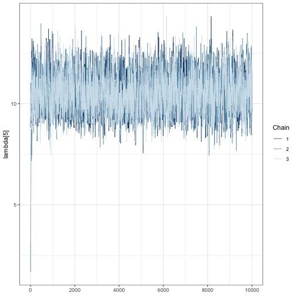
We can see that far fewer than 10,000 iterations are likely required because the chains are mixing well after a few hundred iterations. This is shown by strongly overlapping chains, with no one chain appearing by itself in a region of the parameter space. Chains also appear to be stationary because they do not wander vertically substantially after the first few hundred iterations.
We need to check that chains are stationary and mixing for all
parameters. One way to accelerate visual inspection this is through the
regex_pars argument, which shows relative activity
parameters for all species as in the following three code blocks.
mcmc_trace(fit, regex_pars = "lambda")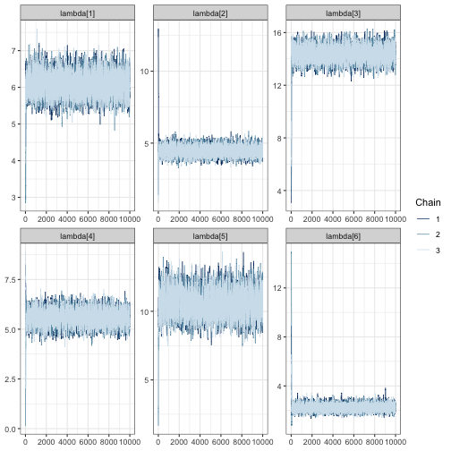
mcmc_trace(fit, regex_pars = "psi")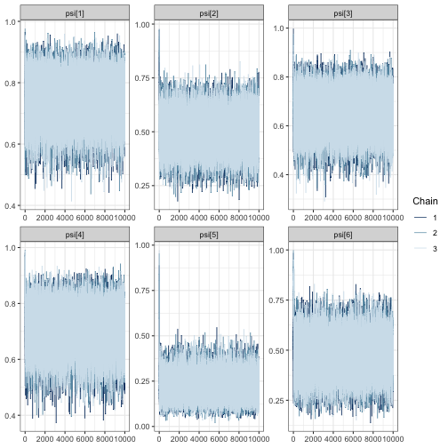
# create a traceplot for all elements of the confusion matrix
mcmc_trace(fit, regex_pars = "theta")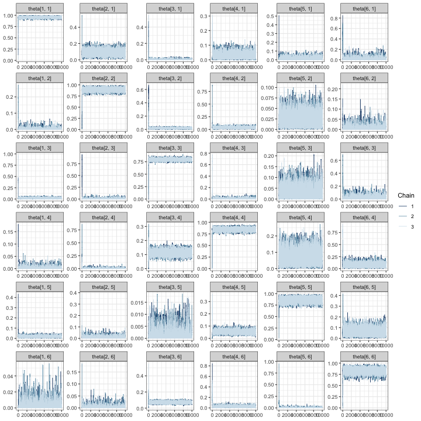
In all of the trace plots for all of the parameters, chains appear to
mix quickly, meaning that it is possible a far smaller number of
iterations may be suitable for a simulation study. A good place to start
for reducing the number of iterations is from the output given by
tune_mcmc. In our case, we can see that a guess for the
minimum number of iterations is 1500 with a warmup of 500:
tune_list$min_iter## [1] 1500
tune_list$min_warmup## [1] 500It is possible to use these values to zoom in on the trace plots by
using the window argument:
mcmc_trace(fit, regex_pars = "lambda", window = c(0, tune_list$min_iter))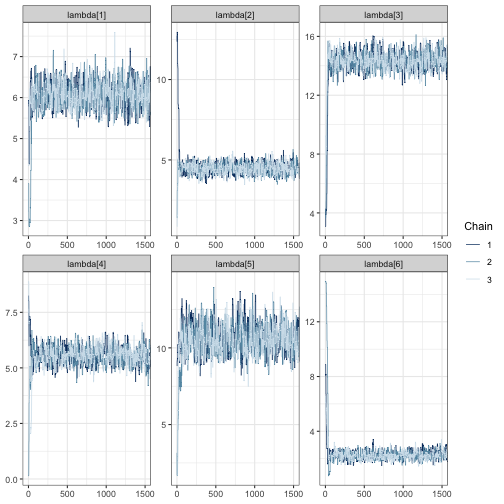
Once again, we see the three chains overlap strongly after around 500 iterations and sample around a horizontal line.
After making traceplots and zooming in for all parameters (not all
plots are shown here), it appears that the guessed warmup value of 500
output from tune_mcmc is a reasonable choice. Even so, we
increase our iterations and warmup beyond the minimum values identified
during MCMC tuning to avoid simulations failing due to convergence.
Examine effective sample size and Gelman-Rubin statistics
As a final step, we examine the effective sample sizes (out of 10,000
draws) and
values. The effective sample size statistics ess_bulk and
ess_tail are MCMC diagnostic statistics that summarizes the
number of effectively independent draws from a parameter’s posterior
distribution the Markov chain contains. If a parameter has a large value
in the ess_bulk column, then it is likely that inference
based on sampled draws will characterize the center of the posterior
distribution well. The ess_tail column, on the other hand,
describes how much information is available about posterior tail
probabilities. Once again, we want a large value for
ess_tail, preferably
ess_tail.
tune_list$MCMC_diagnostics## parameter ess_bulk ess_tail Rhat
## 1 lambda[1] 4218.6667 5297.4088 1.0010423
## 2 lambda[2] 4076.0509 5140.8523 1.0014264
## 3 lambda[3] 2897.8646 4616.7308 1.0014421
## 4 lambda[4] 2367.5596 4125.9465 1.0013321
## 5 lambda[5] 2560.3580 3366.4861 1.0011913
## 6 lambda[6] 3772.6004 5212.6723 1.0006116
## 7 psi[1] 27151.8325 25478.8872 1.0000906
## 8 psi[2] 29682.1333 29385.7919 1.0000489
## 9 psi[3] 30370.2246 29446.2654 0.9999706
## 10 psi[4] 21960.3976 23857.5083 1.0000184
## 11 psi[5] 17218.4005 10876.1165 0.9999967
## 12 psi[6] 9505.6696 10898.5043 1.0000326
## 13 theta[1, 1] 2261.2405 3894.8878 1.0015458
## 14 theta[2, 1] 3448.0706 3091.8774 1.0018883
## 15 theta[3, 1] 1420.2503 2830.4960 1.0023667
## 16 theta[4, 1] 706.3108 455.0007 1.0034833
## 17 theta[5, 1] 1221.0331 2092.6765 1.0023858
## 18 theta[6, 1] 2732.8527 2502.2704 1.0014545
## 19 theta[1, 2] 2644.2308 3548.7343 1.0011383
## 20 theta[2, 2] 3806.3831 5561.4396 1.0004070
## 21 theta[3, 2] 2599.7503 3486.9707 1.0012877
## 22 theta[4, 2] 2989.1630 4032.9984 1.0014633
## 23 theta[5, 2] 4450.6750 5514.5811 1.0014263
## 24 theta[6, 2] 2894.0111 3048.7690 1.0005577
## 25 theta[1, 3] 1223.9552 854.6336 1.0013618
## 26 theta[2, 3] 1800.6271 2964.3943 1.0008773
## 27 theta[3, 3] 3265.8080 6512.5322 1.0011518
## 28 theta[4, 3] 1548.9196 2213.3120 1.0017995
## 29 theta[5, 3] 1681.3371 937.6103 1.0014029
## 30 theta[6, 3] 1129.7754 842.3393 1.0025348
## 31 theta[1, 4] 3120.6232 3488.6429 1.0010351
## 32 theta[2, 4] 3374.3920 3740.9239 1.0011208
## 33 theta[3, 4] 2986.3822 5560.1731 1.0010900
## 34 theta[4, 4] 2294.7094 5084.9649 1.0017780
## 35 theta[5, 4] 2100.6535 3367.0757 1.0021114
## 36 theta[6, 4] 5383.7712 6184.3521 1.0002718
## 37 theta[1, 5] 4430.5887 6748.9207 1.0010588
## 38 theta[2, 5] 2247.2108 2512.9077 1.0019713
## 39 theta[3, 5] 2899.2511 2937.8658 1.0005982
## 40 theta[4, 5] 5547.5156 6947.6156 1.0004042
## 41 theta[5, 5] 2562.6601 5102.4694 1.0014888
## 42 theta[6, 5] 5084.0200 5131.3701 1.0006520
## 43 theta[1, 6] 3708.0213 4129.4246 1.0009075
## 44 theta[2, 6] 3094.9584 2116.7902 1.0007877
## 45 theta[3, 6] 3169.0384 4637.1122 1.0007562
## 46 theta[4, 6] 4157.8234 6798.1207 1.0006590
## 47 theta[5, 6] 3362.0493 3778.7296 1.0009618
## 48 theta[6, 6] 3573.6909 5807.8722 1.0013958For all parameters, the bulk and tail effective sample sizes are fairly large, meaning that even with fewer than 10,000 draws, we could expect allowing us to characterize both the center and tails of the posteriors for all parameters with these draws. Furthermore, the values for all parameters is near 1. In general, we want values of for chains to be considered converged. We can double check by recomputing these statistics on shortened chains:
# for each chain, extract iterations 1001:2500 for all parameters
shortened <- lapply(fit, function(x) x[1001:2500,])
# summarize the shortened chains and select the effective sample
# size columns. mcmc_sum is an internal function used inside of `run_sims`, but
# we use it here to quickly obtain MCMC diagnostics for each parameter
mcmc_sum(shortened, truth = rep(0, ncol(shortened[[1]]))) %>%
select(parameter, ess_bulk, ess_tail, Rhat)## parameter ess_bulk ess_tail Rhat
## 1 lambda[1] 659.6607 1041.47501 1.0124821
## 2 lambda[2] 633.9982 997.64296 1.0124214
## 3 lambda[3] 406.0336 608.21438 1.0041698
## 4 lambda[4] 394.0898 578.31986 1.0057925
## 5 lambda[5] 427.6380 610.52283 1.0043507
## 6 lambda[6] 511.5878 751.58933 1.0068824
## 7 psi[1] 4456.0579 4068.10577 1.0002667
## 8 psi[2] 4695.7869 4341.01096 1.0004376
## 9 psi[3] 4672.3675 4534.57370 1.0000335
## 10 psi[4] 4348.9673 3692.22809 1.0001152
## 11 psi[5] 4277.0253 4397.37233 0.9999471
## 12 psi[6] 1900.6753 3122.80876 0.9998945
## 13 theta[1, 1] 213.2168 510.99337 1.0340076
## 14 theta[2, 1] 420.1724 462.64402 1.0119123
## 15 theta[3, 1] 307.4904 517.58534 1.0017329
## 16 theta[4, 1] 103.1163 78.27652 1.0141918
## 17 theta[5, 1] 202.1417 421.30606 1.0105202
## 18 theta[6, 1] 439.7143 429.26904 1.0028077
## 19 theta[1, 2] 464.6700 477.06672 1.0059255
## 20 theta[2, 2] 461.1501 532.77806 1.0197988
## 21 theta[3, 2] 463.3106 664.46717 1.0041033
## 22 theta[4, 2] 507.0798 605.35790 1.0015923
## 23 theta[5, 2] 707.8389 722.05046 1.0020642
## 24 theta[6, 2] 488.7802 494.06831 1.0040917
## 25 theta[1, 3] 142.3550 107.30974 1.0356507
## 26 theta[2, 3] 271.0448 482.72129 1.0143076
## 27 theta[3, 3] 406.8266 709.78466 1.0048462
## 28 theta[4, 3] 217.6903 461.70333 1.0140200
## 29 theta[5, 3] 199.7939 131.28337 1.0128732
## 30 theta[6, 3] 197.1181 476.37445 1.0356033
## 31 theta[1, 4] 572.7451 648.97553 1.0023786
## 32 theta[2, 4] 515.4881 612.46064 1.0008741
## 33 theta[3, 4] 387.5806 646.46193 1.0037215
## 34 theta[4, 4] 400.0485 1166.26621 1.0057387
## 35 theta[5, 4] 395.7617 741.95632 1.0029655
## 36 theta[6, 4] 897.0067 923.17934 1.0014781
## 37 theta[1, 5] 843.7151 1211.57740 1.0041260
## 38 theta[2, 5] 301.9877 189.22536 1.0191240
## 39 theta[3, 5] 524.2877 570.11696 1.0051693
## 40 theta[4, 5] 838.0160 1194.20555 1.0034813
## 41 theta[5, 5] 427.5636 577.69792 1.0058667
## 42 theta[6, 5] 889.2320 951.93777 1.0032789
## 43 theta[1, 6] 615.6654 842.07190 1.0061096
## 44 theta[2, 6] 639.8041 658.95174 1.0033202
## 45 theta[3, 6] 595.5986 892.41959 1.0014614
## 46 theta[4, 6] 693.8311 1114.37774 1.0032674
## 47 theta[5, 6] 529.0577 529.81216 1.0034092
## 48 theta[6, 6] 687.9854 1489.58173 1.0105002These results appear satisfactory, with effective sample sizes in both the tail and bulk of the posterior distributions of more than 250 and near 1. Based on the results of MCMC tuning, it appears that using an MCMC with at least 1500 iterations with at least 500 discarded as warmup should to produce good results for our simulation study.
Set iterations for simulation
Based on our findings in the MCMC tuning step, we set the number of iterations for simulation to be slightly higher to guard against convergence issues that preclude using a fitted model for inference:
# to be used in the following section
iters_for_sims <- tune_list$min_iter + 1000
warmup_for_sims <- tune_list$min_warmup + 500A note about non-convergence while tuning
In some instances, we have run tune_mcmc with a dataset
and received a series of error messages that convergence was not reached
in under 10,000 iterations. If this persists after trying to fit several
other datasets, we have several options:
We could increase the number of iterations in the simulation study to be above 10,000 – perhaps to 20,000 and settle for a longer run time of the simulation study.
We could take this as a sign that the level of effort is insufficient to identify model parameters. In this case, this scenario should not be considered.
In our experience fitting these models, the second option seems to often be the case, and we encourage users to remove scenarios from consideration if models fit during the tuning step do not reach convergence within 10,000 iterations. It is possible that all validation scenarios – including ones with very large levels of validation effort – will lead to a lack of convergence if the number of sites and visits are very low, in which case the number of sites and visits should be re-evaluated.
We emphasize that the results from tune_mcmc are from a
single model fit; they are supplied only as guidelines, and we encourage
users to increase the number of iterations above the minimum values
output from tune_mcmc. While each model fit will take
slightly longer with an increased number of total iterations, this
approach may save time in the long run by avoiding the need to re-run
simulations.
Step 4: Fit models to simulated data
With the simulated dataset and some informed choices about tuning of
the MCMC, we use run_sims to run the simulations:
sims_output <- run_sims(
data_list = sim_data$masked_dfs,
zeros_list = sim_data$zeros,
DGVs = list(lambda = lambda, psi = psi, theta = Theta),
theta_scenario_id = "FE", # for "fixed effort"
parallel = TRUE,
niter = iters_for_sims,
nburn = warmup_for_sims,
thin = 1,
save_fits = TRUE,
save_individual_summaries_list = FALSE,
directory = tempdir()
)The output object, sims_output is a dataframe with
summaries of the MCMC draws for each parameter estimated from each
dataset under each validation scenario. Summaries include the posterior
mean, standard deviation, Naive standard error, Time-series standard
error, quantiles for 50% and 95% posterior intervals, median, and MCMC
diagnostics (Gelman-Rubin statistic, and effective samples sizes in the
tails and bulk of the distribution).
str(sims_output)## 'data.frame': 1920 obs. of 19 variables:
## $ parameter : chr "lambda[1]" "lambda[2]" "lambda[3]" "lambda[4]" ...
## $ Mean : num 6.05 4.8 14.05 5.99 11.81 ...
## $ SD : num 0.356 0.345 0.448 0.485 0.801 ...
## $ Naive SE : num 0.0053 0.00515 0.00667 0.00723 0.01194 ...
## $ Time-series SE: num 0.0141 0.0153 0.0175 0.0261 0.0295 ...
## $ 2.5% : num 5.38 4.18 13.16 5.03 10.26 ...
## $ 25% : num 5.8 4.57 13.76 5.66 11.29 ...
## $ 50% : num 6.03 4.79 14.04 6 11.79 ...
## $ 75% : num 6.28 5.01 14.33 6.32 12.32 ...
## $ 97.5% : num 6.77 5.56 14.97 6.92 13.42 ...
## $ Rhat : num 1 1.01 1.01 1.01 1.01 ...
## $ ess_bulk : num 643 539 520 269 621 ...
## $ ess_tail : num 720 687 874 545 703 ...
## $ truth : num 5.93 4.16 14.25 6.2 11.86 ...
## $ capture : num 1 0 1 1 1 1 1 1 1 1 ...
## $ converge : num 1 1 1 1 1 1 1 1 1 1 ...
## $ theta_scenario: chr "FE" "FE" "FE" "FE" ...
## $ scenario : int 1 1 1 1 1 1 1 1 1 1 ...
## $ dataset : int 1 1 1 1 1 1 1 1 1 1 ...Note that we fit all models in parallel to reduce simulation time; we
encourage users to do the same. However, if you fit models with
parallel = FALSE in run_sims, the console will
display the messages NIMBLE prints as it compiles code for each model.
Internally, we specify a custom distribution to compute the marginal
probabilities for ambiguous autoID labels, and you will see a warning
about overwriting a custom user-specified distribution if
parallel = FALSE. These warnings can be safely ignored.
Step 5: Visualize simulations
Once models have been fit to all simulated datasets, you can
visualize results using several functions. We recommend beginning with
the most detailed functions, which are
visualize_parameter_group and
visualize_single_parameter. The plots output from these
functions show many following features of the simulation study. These
are
- Facet grids: parameters (only for
visualize_parameter_group) - X-axis: Manual verification scenario
- y-axis: parameter values
- Small grey error bars: 95% posterior interval for an individual
model fit where all parameters were below
convergence_threshold. - Colored error bars: average 95% posterior interval across all converged models under that scenario.
- Color: Coverage, or the rate at which 95% posterior intervals contain the true data-generating parameter value.
- Black points: the true value of the parameter
- Red points: average posterior mean
The visualize_parameter_group function is useful for
examining an entire set of parameters, such as all relative activity
parameters. For example, we can visualize the inference for the relative
activity parameters in the first three scenarios in our simulation study
above by running the code below.
visualize_parameter_group(
sim_summary = sims_output,
pars = "lambda",
theta_scenario = 1,
scenarios = 1:4,
convergence_threshold = 1.05
)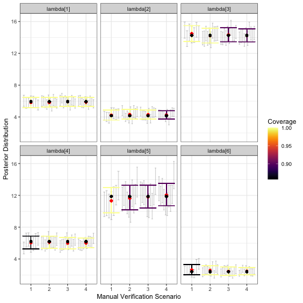
visualize_parameter_group function. Results are faceted by
parameter, with the x-axis indicating the validation scenario number,
and the y-axis showing the data generating value (black point). Red
points show average posterior means, small grey intervals show 95%
posterior intervals from converged model fits and colored intervals are
average 95% posterior intervals. Coverage is shown by color, with blue
corresponding to low coverage.The output figure indicates that under all validation scenarios we considered, the expected inference for relative activity rates of species 1-4 and 6 meets our measurable objectives: the posterior interval width is less than three for these species and there is minimal estimation error. However, note that under validation scenario 1 and 2, fewer of the models converged within 2500 iterations of the MCMC, which is visible from smaller number of grey intervals. This suggests that a higher level of validation effort could be beneficial. Additionally, average interval width is never below 3 for species 5; none of the designs considered here meet the measurable objective for this species. We can see this more clearly by examining output through alternative visualization functions.
A first step would be to use visualize_single_parameter,
which takes the same arguments as the previous visualization
function:
visualize_single_parameter(
sims_output, par = "lambda[5]",
theta_scenario = 1,
scenarios = 1:4,
convergence_threshold = 1.05
)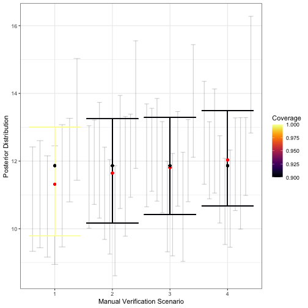
visualize_single_parameter is similar to that of
visualize_parameter_group: the x-axis shows the validation
scenario, and the y-axis shows the true value of the parameter (black
point). Average posterior means are shown by red points, individual 95%
posterior intervals from converged model fits are shown as small grey
error bars and average 95% posterior intervals are shown by the larger
colored error bars. The coverage is indicated by color.The greater detail of visualize_single_parameter
underscores the difference in the number of converged models, shown by
the number grey 95% posterior interval for each converged model fit. The
visualization also helps clarify that while average interval width is
near 3 in scenario 2, it is still acceptable for our measurable
objectives. Coverage for most relative activity parameters is also
near-nominal under this validation scenario, which requires that around
375 recordings be validated in an average dataset. This can also be seen
using the plot_width_vs_calls function, which compares
average interval widths (and the IQR for interval widths) across
scenarios based on the number of recordings validated. For example:
# obtain summary of validation effort as an object that can be used with
# the summary plot functions plot_x_vs_calls
s <- summarize_n_validated(
data_list = sim_data$masked_dfs,
theta_scenario = "FE", # must not be NULL for the plot_X_vs_calls functions
scenario_numbers = 1:4
)
plot_width_vs_calls(
sim_summary = sims_output,
calls_summary = s,
regex_pars = "lambda",
theta_scenario = "FE",
scenarios = 2:5
) + # add horizontal line at target 95% CI width
geom_hline(yintercept = 3, linetype = "dotted") 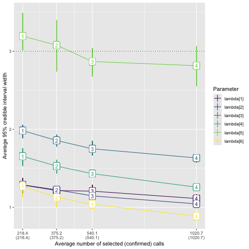
plot_width_vs_calls. The x-axis shows the number of
validated recordings. Note that the level of effort increases with
scenario number for the fixed-effort designs; this may not always be the
case, for example, with a stratified-by-species design as in the main
text. The y-axis shows the value of the average 95% posterior interval
width (point). The middle 50% of interval widths for each parameter are
shown by the error bars. Color indicates the parameter.We provide analogous functions plot_coverage_vs_calls
and plot_bias_vs_calls taking identical arguments that show
how coverage and estimation error change with the number of calls
validated. Note that in all of our visualization functions, if no fitted
models have
for all parameters, where
is the specified convergence threshold under a given scenario, then the
scenario will not appear on the x-axis. In our example, we used
.
To ensure that there aren’t substantial problems with estimation of other model parameters, we can create plots for and :
visualize_parameter_group(
sim_summary = sims_output,
pars = "psi",
theta_scenario = 1,
scenarios = 1:4,
convergence_threshold = 1.05
)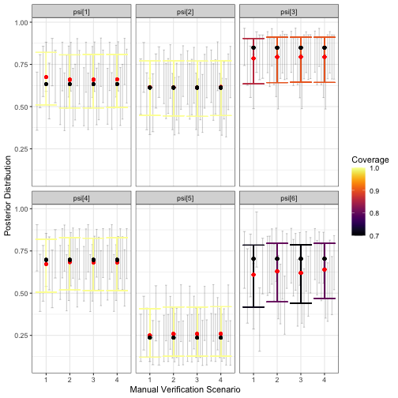
visualize_parameter_group(
sim_summary = sims_output,
pars = "theta",
theta_scenario = 1,
scenarios = 1:4,
convergence_threshold = 1.05
)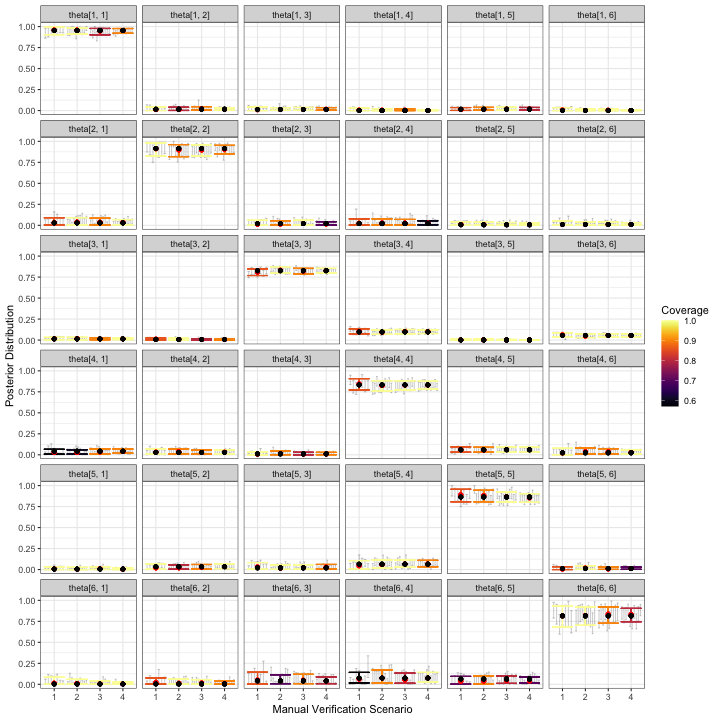
The simulation results for and don’t immediately cause concern that inference for relative activity rates will be severely compromised for any of these validation designs. Some parameters have slightly low coverage, but we believe this is mostly due to the small number of datasets used in this example; users should increase the number of datasets to at least 50, which we expect would lead to coverage near nominal levels.
Take-aways from the Fixed-Effort Simulations
Based on the simulation results shown in the figures above, we can rule out validation scenario 1, because the expected width of 95% posterior intervals is greater than the threshold value of 3. Because of this, we might choose validation scenario 2 as one possible fixed effort validation design. This fixed effort design assumes that 10% of recordings from each site-night are randomly selected for validation, leading to around 375 recordings being validated per dataset. In our simulations, posterior means for each appear to be nearly unbiased, with near-nominal coverage and average posterior interval widths less than or equal to 3 for this scenario. However, it is possible that for a given dataset, the interval width for will be larger than 3, regardless of the number of validated calls; in the plot of calls versus interval widths, error bars overlap or exceed the dotted line in all scenarios.
In situations such as this one, a decision is required of the user. If a slightly larger interval width is acceptable, validating 10% percent of recordings from all site-visits is reasonable. If it is not, then the LOVE will need to be increased beyond that in scenario 4 (1021 recordings). The question is whether potentially tripling the number of validated recordings will be worth the benefit of ensuring the relative activity level for species 5 is less than 3. This is a question about measurable objectives that we leave to the practitioner and their study priorities.
Stratified-by-species example
In this section, we provide further details of the example in the main manuscript, which assumed a stratified-by-species design. In a stratified-by-species design, the random mechanism is a stratified random sample, with strata formed by the species labels assigned during automated classification (i.e., by autoID). In this type of design, the LOVE is the proportion of recordings selected to be validated for each species label.
We repeat the simulation study conducted in the main text in this section, providing greater detail for some of the steps. We assume the same measurable objectives as in the fixed effort example, but we now assume the maximum number of recordings that can be viewed by experts during the validation process is 1000.
Simulate data
Using the same values for psi, lambda and
Theta as in the previous example, we simulate data using
simulate_validatedData with
design_type = "BySpecies" and set the probability of
successfully validating a selected recording using the
confirmable_limits argument.
sim_data <- simulate_validatedData(
n_datasets = 10,
design_type = "BySpecies",
scenarios = list(
spp1 = 0.15,
spp2 = 0.15,
spp3 = c(0.15, .5, 1),
spp4 = 0.1,
spp5 = c(0.5, 1),
spp6 = 0.25
),
nsites = nsites,
nspecies = nspecies,
nvisits = nvisits,
psi = psi,
lambda = lambda,
theta = Theta,
directory = tempdir()
)Note that in contrast with the fixed effort example,
simulate_validatedData expects the scenarios
argument to be a list of proportions corresponding to the possible
levels of effort for each species when specifying a
stratified-by-species design. Internally,
simulate_validatedData calls
base::expand.grid, and considers all possible combinations
of the various levels of effort for each species, meaning that the
number of simulated scenarios grows extremely quickly. The biggest
implication of having a larger number of simulation scenarios to
consider is increased computation time. For example, in the previous
code block we fixed the level of effort for species 1, 2, 4 and 6 at
.15, .15, .1, and .25, respectively. There are three possible
proportions to validate for species 3 and two possible levels of effort
for species 5, yielding six possible scenarios, which are summarized in
the additional output sim_data$scenarios_df that is
available when design_type = "BySpecies" is specified:
names(sim_data)## [1] "full_datasets" "zeros" "masked_dfs" "scenarios_df"
sim_data$scenarios_df## scenario spp1 spp2 spp3 spp4 spp5 spp6
## 1 1 0.15 0.15 0.15 0.1 0.5 0.25
## 2 2 0.15 0.15 0.50 0.1 0.5 0.25
## 3 3 0.15 0.15 1.00 0.1 0.5 0.25
## 4 4 0.15 0.15 0.15 0.1 1.0 0.25
## 5 5 0.15 0.15 0.50 0.1 1.0 0.25
## 6 6 0.15 0.15 1.00 0.1 1.0 0.25If users would like to supply a tailored set of validation scenarios,
this can be done through the scen_expand and
scen_df arguments as follows:
# Define the scenarios dataframe. Each row is a scenario, each column is a spp
my_scenarios <- data.frame(
spp1 = c(0.05, 0.05, 0.1),
spp2 = c(0.1, 0.2, 0.3),
spp3 = c(0.2, 0.2, 0.25),
spp4 = c(0.4, 0.5, 0.6),
spp5 = rep(1, 3),
spp6 = rep(0.5, 3)
)
sim_data2 <- simulate_validatedData(
n_datasets = 10,
design_type = "BySpecies",
scen_expand = FALSE,
scen_df = my_scenarios,
scenarios = NULL,
nsites = nsites,
nspecies = nspecies,
nvisits = nvisits,
psi = psi,
lambda = lambda,
theta = Theta,
directory = tempdir()
)
sim_data2$scenarios_df # the same as my_scenarios above## scenario spp1 spp2 spp3 spp4 spp5 spp6
## 1 1 0.05 0.1 0.20 0.4 1 0.5
## 2 2 0.05 0.2 0.20 0.5 1 0.5
## 3 3 0.10 0.3 0.25 0.6 1 0.5In the remainder of this example, we use the sim_data
object. We can combine the scenarios_df output with the
output of summarize_n_validated to understand what the
scenarios are and how many recordings are validated under each.
summary1 <- sim_data$scenarios_df
summary2 <- summarize_n_validated(
sim_data$masked_dfs,
scenario_numbers = 1:6,
theta_scenario = "BySpecies"
)
call_sum <- left_join(summary1, summary2, by = "scenario")
call_sum## scenario spp1 spp2 spp3 spp4 spp5 spp6 theta_scenario n_selected
## 1 1 0.15 0.15 0.15 0.1 0.5 0.25 BySpecies 603.8
## 2 2 0.15 0.15 0.50 0.1 0.5 0.25 BySpecies 1018.3
## 3 3 0.15 0.15 1.00 0.1 0.5 0.25 BySpecies 1610.4
## 4 4 0.15 0.15 0.15 0.1 1.0 0.25 BySpecies 778.3
## 5 5 0.15 0.15 0.50 0.1 1.0 0.25 BySpecies 1192.8
## 6 6 0.15 0.15 1.00 0.1 1.0 0.25 BySpecies 1784.9
## n_validated
## 1 603.8
## 2 1018.3
## 3 1610.4
## 4 778.3
## 5 1192.8
## 6 1784.9In the resulting dataframe, we see that scenario 1 has the lowest overall level of validation effort: species 1-3 have 15% of their recordings validated, species 4 has 10% validated, species 5 has 50%, and species 6 has 25%, yielding around 604 recordings validated in an average dataset. We use one dataset simulated under scenario 1 to tune the MCMC.
Tune the MCMC
The MCMC tuning in this step is very similar to the procedures used
to tune the MCMC in the fixed effort example. We begin by fitting a
model to one dataset using the tune_mcmc function.
i <- sample(1:length(sim_data$full_datasets), 1)
tune_list <- tune_mcmc(
dataset = sim_data$masked_dfs[[1]][[i]],
zeros = sim_data$zeros[[i]]
)## [1] "Fitting MCMC in parallel ... this may take a few minutes"We visually inspect the chains for convergence using trace plots. We
set trace plot windows to be wider than the suggested values from
tune_mcmc, meaning a lower starting value and a higher
ending value. Based on these plots, chains appear to be mixing well as
no one chain stands out visually.
tune_list$min_warmup## [1] 500
tune_list$min_iter## [1] 1500
# increase iters to visualize beyond the warmup and
# iterations output from tune_mcmc
fit <- tune_list$fit
mcmc_trace(fit, regex_pars = "lambda", window = c(0, tune_list$min_iter + 500))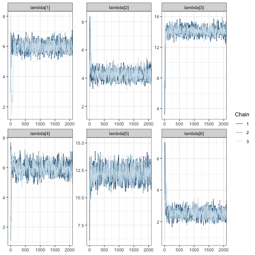
mcmc_trace(fit, regex_pars = "psi", window = c(0, tune_list$min_iter + 500))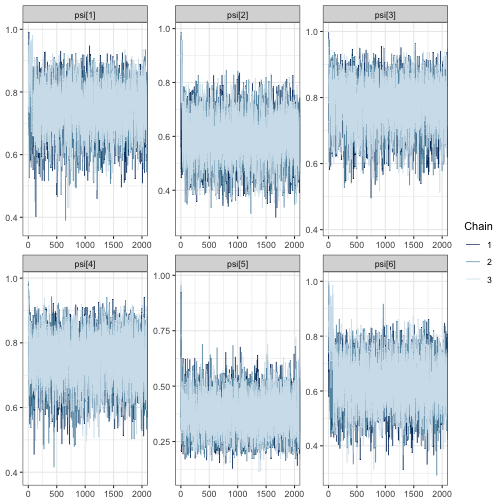
mcmc_trace(fit, regex_pars = "theta", window = c(0, tune_list$min_iter + 500))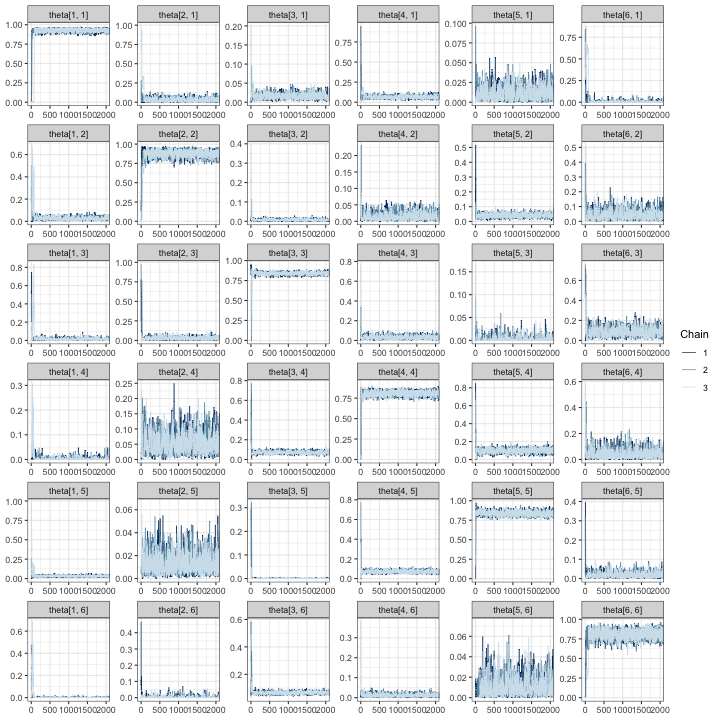
In all trace plots, it appears that MCMC chains have reached
approximate convergence well before the warmup value of 500 draws output
from tune_mcmc.
Next, we examine the effective sample sizes in the tails and bulk of the posteriors and the values:
tune_list$MCMC_diagnostics## parameter ess_bulk ess_tail Rhat
## 1 lambda[1] 4785.187 6015.156 1.0002953
## 2 lambda[2] 3482.169 4671.583 1.0010385
## 3 lambda[3] 4010.305 5077.642 1.0011804
## 4 lambda[4] 3838.985 5066.782 1.0005667
## 5 lambda[5] 4389.305 6076.436 1.0005144
## 6 lambda[6] 3406.792 4158.077 1.0004562
## 7 psi[1] 29121.024 23900.572 1.0000143
## 8 psi[2] 29804.548 28990.720 0.9999733
## 9 psi[3] 30171.029 28065.621 0.9999970
## 10 psi[4] 29714.743 30187.849 0.9999654
## 11 psi[5] 26941.892 27878.460 1.0000525
## 12 psi[6] 22975.041 24021.093 1.0000437
## 13 theta[1, 1] 5787.766 9100.303 1.0004077
## 14 theta[2, 1] 3455.126 3155.152 1.0006055
## 15 theta[3, 1] 4497.881 6507.510 1.0008888
## 16 theta[4, 1] 5448.294 7671.854 1.0004599
## 17 theta[5, 1] 4422.335 4442.610 1.0007224
## 18 theta[6, 1] 3346.556 3904.648 1.0003512
## 19 theta[1, 2] 4197.079 6509.295 1.0000984
## 20 theta[2, 2] 4671.424 6916.745 1.0002588
## 21 theta[3, 2] 4977.624 6018.970 1.0002021
## 22 theta[4, 2] 3768.818 4339.586 1.0006414
## 23 theta[5, 2] 5832.809 7764.025 1.0006486
## 24 theta[6, 2] 3972.024 4916.645 1.0003475
## 25 theta[1, 3] 4106.142 5400.044 1.0003499
## 26 theta[2, 3] 4255.177 4675.944 1.0006575
## 27 theta[3, 3] 4864.204 8569.148 1.0014585
## 28 theta[4, 3] 4559.116 5859.463 1.0004257
## 29 theta[5, 3] 2354.970 2196.293 1.0022593
## 30 theta[6, 3] 3726.412 5771.138 1.0006064
## 31 theta[1, 4] 2855.605 2506.061 1.0008671
## 32 theta[2, 4] 3964.252 6380.398 1.0011764
## 33 theta[3, 4] 3864.012 6188.563 1.0012619
## 34 theta[4, 4] 6352.542 9022.962 1.0003353
## 35 theta[5, 4] 4401.833 6435.479 1.0005240
## 36 theta[6, 4] 4056.456 5345.106 1.0009939
## 37 theta[1, 5] 8474.764 11130.448 1.0004465
## 38 theta[2, 5] 6236.015 7361.206 1.0004429
## 39 theta[3, 5] 2798.787 3910.813 1.0014421
## 40 theta[4, 5] 6898.849 8812.403 1.0004727
## 41 theta[5, 5] 5311.251 9890.303 1.0002080
## 42 theta[6, 5] 5837.553 7243.298 1.0006446
## 43 theta[1, 6] 3392.526 4186.108 1.0019124
## 44 theta[2, 6] 2456.909 1244.644 1.0008431
## 45 theta[3, 6] 4282.198 3193.990 1.0014370
## 46 theta[4, 6] 4898.688 4414.135 1.0016046
## 47 theta[5, 6] 4864.306 5687.563 1.0016675
## 48 theta[6, 6] 4556.444 7105.185 1.0001742For all parameters, the bulk and tail effective sample sizes are fairly large: if we slightly decrease the number of post-warmup draws, we could expect to characterize both the center and tails of the posteriors well. Additionally, for all parameters, indicating good mixing for chains. As before, we check this suspicion by computing MCMC diagnostic statistics for truncated chains:
# for each chain, extract iterations 501:2000 for all parameters
shortened <- lapply(fit, function(x) x[(tune_list$min_warmup):tune_list$min_iter + 1000,])
# summarize the shortened chains and select the effective sample
# size columns
mcmc_sum(shortened, truth = rep(0, ncol(shortened[[1]]))) %>%
select(parameter, ess_bulk, ess_tail)## parameter ess_bulk ess_tail
## 1 lambda[1] 574.1892 633.6262
## 2 lambda[2] 348.2909 614.8738
## 3 lambda[3] 435.9153 589.8075
## 4 lambda[4] 382.8387 499.1073
## 5 lambda[5] 459.0001 612.6886
## 6 lambda[6] 442.3031 621.4838
## 7 psi[1] 3048.3363 2970.2396
## 8 psi[2] 3156.8813 2939.1626
## 9 psi[3] 3105.5931 2634.2629
## 10 psi[4] 2771.7190 2886.5934
## 11 psi[5] 2724.5111 2710.7067
## 12 psi[6] 2765.9277 2868.8254
## 13 theta[1, 1] 718.2535 1118.7205
## 14 theta[2, 1] 507.1318 816.7757
## 15 theta[3, 1] 532.8965 607.5688
## 16 theta[4, 1] 676.0604 945.1029
## 17 theta[5, 1] 474.9767 493.7329
## 18 theta[6, 1] 331.1427 328.2412
## 19 theta[1, 2] 378.4661 542.1534
## 20 theta[2, 2] 461.7568 867.3559
## 21 theta[3, 2] 582.5390 712.0605
## 22 theta[4, 2] 419.8620 512.9908
## 23 theta[5, 2] 635.0468 895.2092
## 24 theta[6, 2] 468.9389 648.5659
## 25 theta[1, 3] 464.9002 631.3908
## 26 theta[2, 3] 464.9974 579.8377
## 27 theta[3, 3] 475.3561 1075.7107
## 28 theta[4, 3] 522.3379 734.1960
## 29 theta[5, 3] 390.0819 433.5848
## 30 theta[6, 3] 494.3521 818.0141
## 31 theta[1, 4] 338.1179 302.2860
## 32 theta[2, 4] 352.6493 580.8035
## 33 theta[3, 4] 357.5814 668.1405
## 34 theta[4, 4] 864.2150 1367.6856
## 35 theta[5, 4] 498.6143 726.9613
## 36 theta[6, 4] 479.4368 719.9665
## 37 theta[1, 5] 823.2224 993.5574
## 38 theta[2, 5] 592.2021 681.8409
## 39 theta[3, 5] 330.7999 264.4705
## 40 theta[4, 5] 854.1993 895.0335
## 41 theta[5, 5] 528.4875 1040.5071
## 42 theta[6, 5] 665.5349 656.5485
## 43 theta[1, 6] 451.3428 478.1981
## 44 theta[2, 6] 375.2597 397.9304
## 45 theta[3, 6] 563.7432 948.9868
## 46 theta[4, 6] 583.7598 665.7532
## 47 theta[5, 6] 544.3184 705.7296
## 48 theta[6, 6] 563.8011 1075.2020The results appear satisfactory, with effective sample sizes of more than 250 in both the tail and bulk of the posterior distributions for each parameter. Based on the results of MCMC exploration, it appears that using an MCMC with 2500 iterations with 500 discarded as warmup is likely to produce good results for our simulation study.
Fit models
sims_out <- run_sims(
data_list = sim_data$masked_dfs,
zeros_list = sim_data$zeros,
DGVs = list(lambda = lambda, psi = psi, theta = Theta),
theta_scenario_id = "BySpecies",
parallel = TRUE,
niter = tune_list$min_iter + 500,
nburn = tune_list$min_warmup + 250,
thin = 1,
save_fits = FALSE,
save_individual_summaries_list = FALSE,
directory = tempdir()
)The output, sims_out, will have the same structure as in
the fixed effort example.
Visualize results
Recall that the measurable objectives of our study are to estimate
the relative activity rates with estimation error less than 1 call per
night and a 95% posterior interval width of less than 3 calls per night.
Furthermore, we assume that the monitoring program can afford to
validate 4000 calls in total. All of the possible validation designs
shown in sim_data$scenarios_df are feasible given this
budget.
We begin with detailed plots of relative activity rates, occurrence probabilities, and classification probabilities.
visualize_parameter_group(
sim_summary = sims_out,
pars = "lambda",
theta_scenario = "BySpecies",
scenarios = 1:6,
)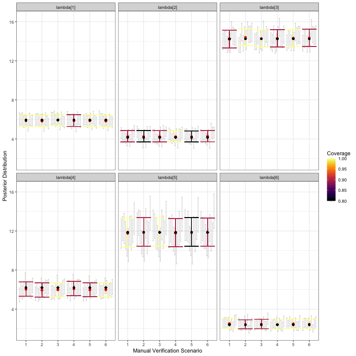
visualize_parameter_group under six possible
stratified-by-species scenarios for relative activity rates. Parameters
are shown in each facet and validation scenario number is on the x-axis.
Small grey intervals are 95% posterior intervals for each parameter from
fitted models that converged. Larger colored error bars are average 95%
posterior intervals with the color indicating the coverage. Black dots
are the true parameter value and red dots are average posterior
means.Based on the simulation results for , any of validation scenarios 1-6 is expected to produce a posterior mean estimate for each relative activity parameter that is near the true value. All models converged for all scenarios. Coverage varies by scenario for each parameter, but recall that we only fit models to 10 datasets.
visualize_parameter_group(
sim_summary = sims_out,
pars = "psi",
theta_scenario = "BySpecies",
scenarios = 1:6,
)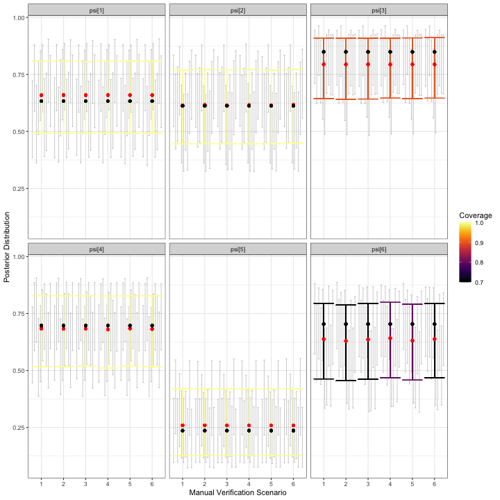
visualize_parameter_group under six possible
stratified-by-species scenarios for occurrence probabilities. Parameters
are shown in each facet and validation scenario number is on the x-axis.
Small grey intervals are 95% posterior intervals for each parameter from
fitted models that converged. Larger colored error bars are average 95%
posterior intervals with the color indicating the coverage. Black dots
are the true parameter value and red dots are average posterior
means.The simulation results for occurrence probabilities show a small amount estimation error for all occurrence probabilities, with the size and direction varying depending on the species. For species with larger estimation error, coverage is also slightly low. However, since we are most concerned with relative activity, the goal is to check results for each for severe estimation error and/or lack of coverage, which are not shown in the figure above. Similarly, we do not observe alarming simulation results for :
visualize_parameter_group(
sim_summary = sims_out,
pars = "theta",
theta_scenario = "BySpecies",
scenarios = 1:6,
)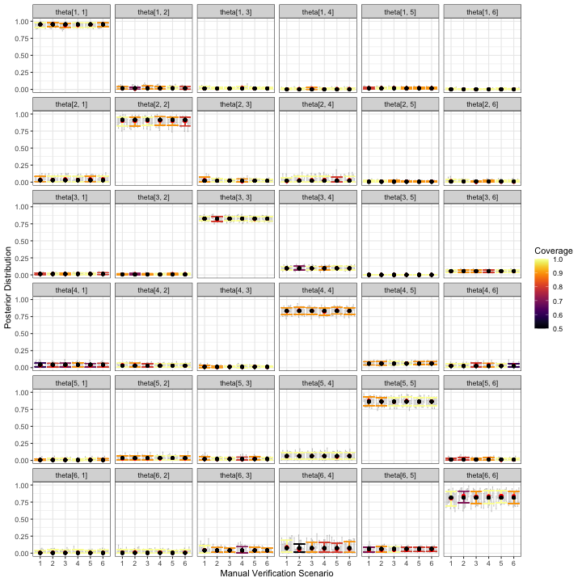
visualize_parameter_group under six possible
stratified-by-species scenarios for classification probabilities.
Parameters are shown in each facet and validation scenario number is on
the x-axis. Small grey intervals are 95% posterior intervals for each
parameter from fitted models that converged. Larger colored error bars
are average 95% posterior intervals with the color indicating the
coverage. Black dots are the true parameter value and red dots are
average posterior means.One measurable objective is for 95% posterior interval widths to be
less than 3 calls per night for each species’ relative activity rate.
The plot_width_vs_calls function addresses this measurable
objective directly:
plot_width_vs_calls(
sim_summary = sims_out,
calls_summary = call_sum,
regex_pars = "lambda",
theta_scenario = unique(sims_out$theta_scenario),
scenarios = 1:6,
max_calls = 1000 # put shading over scenarios that are beyond budget
)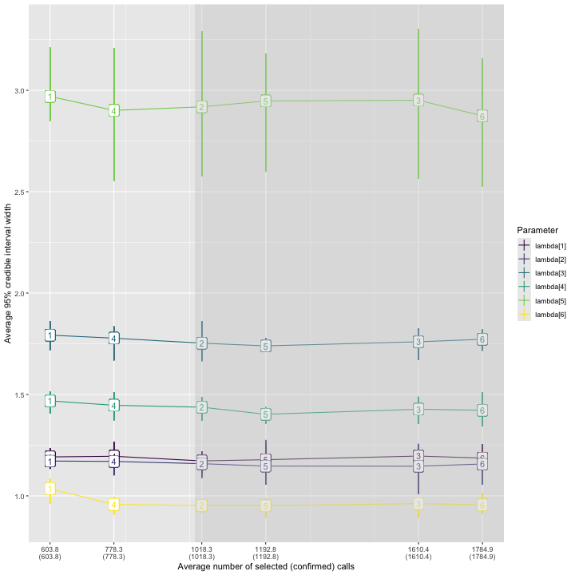
As observed previously, the widest posterior interval width is for species 5. All validation scenarios have average 95% posterior interval widths near or slightly below 3 calls per night, but the error bars indicate an interval width greater than 3 is possible for any validation scenario. Scenario 6, in which 1785 recordings are validated, has the narrowest expected interval width.
Take-aways
The simulation results for by-species validation imply that, of the stratified-by-species validation designs considered, scenario 6 offered the best results with respect to the measurable objectives. In this scenario, the six species in our assemblage receive 15%, 15%, 100%, 10%, 100%, and 25% of their recordings validated, respectively.
To keep the number of scenarios in this example small, we fixed the LOVE for several species. However, if the measurable objectives specified the desired accuracy and precision for estimates of occurrence probability, it may be desirable to consider alternative validation scenarios. For example, we consistently underestimated the occurrence probability for species 6 (see plot of average posterior means and average 95% credible intervals for each ), and additional simulations under validation designs that varied the level of effort for species 6 would be warranted if measurable objectives related to occurrence probability for this species.
Conclusion
We have demonstrated the use of the ValidationExplorer
package when the objective is to compare the merits of four competing
LOVEs for fixed-effort and stratified-by-species designs. Specifically,
in the fixed-effort design we considered validating a random sample of
5%, 10%, 15% or 30% of the recordings obtained during each visit to each
site. In the stratified-by-species designs, we considered a suite of
validation designs, fixing effort for species 1,2, 4, and 6 at less than
or equal to 25%, and varied the level of effort for species 3 and 5. The
exact simulations considered are summarized in the call_sum
object in Section @ref(simBySpp). The measurable objectives were to
estimate the relative activity parameters for each species, with
near-nominal coverage and width less than 3 calls per night for 95%
posterior intervals. Results, and their implications for these
measurable objectives were summarized at the end of each example.
Practitioners who would like to inform study design prior to data
collection can repeat multiple simulation studies to see how inferences
change with the number of sites and balanced visits, in addition to the
validation design.